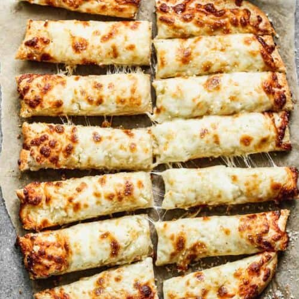

Cheesy Garlic Breadsticks
Home


4.97 from 30 votes
Author: Lauren Allen | Total Time: 1 Hr 25 Mins | Yield: 14 Servings
For this recipe I took my favorite homemade pizza crust recipe and halved it, to make one batch of breadsticks. You could make the full recipe for two batches of breadsticks, or use half the dough to make one pizza, and the other half to make cheesy breadsticks.
Some possible Variations include:
- Cinnamon sugar breadsticks: make the dough, form the breadsticks, then top with ½ stick of melted butter. Mix ½ cup sugar with 2 Tablespoons ground cinnamon and sprinkle over the buttered breadsticks.
- Swap the cheese: feel free to substitute any kind of shredded cheese you like.
- Make pizza: This breadstick recipe is the same as my pizza dough recipe. You can use this recipe to make 1 pizza crust or double it to make pizza and breadsticks!
Ingredients
- 1 1/8 tsp active dry yeast
- 1 tsp granulated sugar
- 3/4 cup warm water
- 1 1/2 Tbsp olive oil
- 3/4 tsp salt
- 1/2 tsp white vinegar
- 1 ½ - 2 cups bread flour or all-purpose flour
- 1 1/2 Tbsp salted butter
- 2 cloves garlic, minced
- 1/3 cup freshly grated parmesan cheese
- 1 1/4 cups shredded mozzarella cheese
Instructions
- In a large bowl or stand mixer combine ½ cup of the warm water with the sugar and yeast. Stir to combine and let rest for 5 minutes. Add the remaining ¼ cup warm water, olive oil, salt and vinegar.
- Begin mixing on medium-low speed and gradually add the flour --knead for a few minutes, or until the dough is smooth and elastic (it should be slightly sticky, but not so sticky that it sticks to your clean fingertip). Mine is usually ready with 1 ½ cups flour) Cover the bowl with a dry towel and allow to rest in a warm place for 1 hour.
- Preheat oven to 475 degrees F with a pizza stone inside or upside down cookie sheet inside.
- Gently punch the dough down. Place a large piece of parchment paper on your counter and use your hands (or a rolling pin, but it's easier with your hands) to spread the dough into a rectangle about ⅓ inch thick.
- Mix melted butter and garlic in a small bowl then spread mixture evenly over dough, all the way to the edges. Top with parmesan and mozzarella cheeses.
- Transfer the dough (still on the parchment paper) onto the hot pizza stone in the oven. Bake for 8-12 minutes or until golden and bubbly.
- Serve with dipping sauces like marinara sauce or ranch.